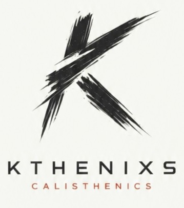

Master the basics
Push-ups, pull-ups, and dips create the foundation that makes future progress possible.

A practical framework for building real bodyweight strength, mastering the basics, and progressing toward skills only a small percentage of people can perform.
This page gives you an overview of the training methods and principles I have learned from some of the best calisthenics athletes in the world over the last five years.
My approach is designed primarily for beginners and intermediates. Whether you are learning your first push-up or working toward advanced skills like the planche, front lever, or handstand push-up, the goal stays the same: build strength, muscle, and body control.
If you stay consistent with the program, you can expect to become stronger, leaner, more muscular, and significantly more capable with your own bodyweight.
Push-ups, pull-ups, and dips create the foundation that makes future progress possible.
Short, frequent practice helps your body learn new movement patterns without draining recovery.
Protein, sleep, smart warm-ups, and pain-free training keep you progressing for the long term.
Most people want to rush into advanced skills before they have earned the strength required for them. Before worrying about advanced skills, build a solid foundation with three exercises: push-ups, pull-ups, and dips.
Your core is still important, but it is often overemphasised by people who do not train calisthenics. Your shoulders and triceps, plus your back and biceps, are the two most important areas to build. You only need minimal core-specific work because your core is indirectly challenged in virtually every skill.
A strong foundation will increase your progress tenfold.
At the beginner stage, focus on mastering these movements and their variations:
Volume is king here. The more quality reps you perform, the faster you will improve.
Once the basics are established, start introducing skill work and harder exercise variations. Form becomes extremely important: bad technique creates bad habits, slows progress, and increases injury risk.
Record yourself during training whenever possible. Video often reveals technical mistakes you do not notice while performing the exercise.
Skill development is different from strength development. Advanced movements such as handstands, planches, and front levers require your central nervous system to learn new movement patterns.
Short daily practice sessions can be extremely effective. Even 5–10 minutes of skill work outside the main training session can dramatically improve progress over time.
Whenever possible, dynamic exercises should be prioritised over static holds. For example, full range of motion pull-ups usually provide more strength and muscle-building benefit than simply holding the top position.
Static holds still have value, but movement should form the foundation of your training.
Unlike traditional bodybuilding, most calisthenics exercises are compound movements. Multiple muscle groups work together during each exercise, creating greater overall strength, better coordination, and a more balanced, aesthetic physique.
Although it is not mainstream, I generally recommend training push and pull movements within the same workout. This helps you achieve higher weekly training volume and more balanced development.
More advanced athletes may use lower rep ranges for strength-focused work.
Upper body skills are often the main focus of calisthenics, but lower body training should not be neglected. I recommend at least one dedicated leg session per week aside from your regular calisthenics sessions.
Alternatively, include a few leg exercises at the end of your workouts so you preserve energy for the main workout.
If your goal is to build muscle and recover properly, protein intake should be your top nutritional priority. Aim for approximately 1g of protein per pound of bodyweight, or around 2g per kilogram of bodyweight.
Recovery is where growth happens. You do not get stronger during the workout; you get stronger after the workout. This is why sufficient protein intake and 7–9 hours of good sleep per night are vital.
Calisthenics places significant stress on the wrists, elbows, shoulders, and connective tissues. Never skip your warm-up.
If you experience unusual pain during an exercise, stop that movement immediately, continue only with exercises that are pain-free, and allow the area to recover.
For more serious injuries, avoid painful movements entirely until recovery. If symptoms persist, consult a qualified doctor or physiotherapist.
Motivation is good, but unreliable. Discipline is what produces results. There will be periods where you do not feel motivated to train, and everyone experiences this, including me. The athletes who progress are simply the ones who do not give up.
Sometimes you will feel stuck for weeks or months before suddenly breaking through to a new level. Trust the process.